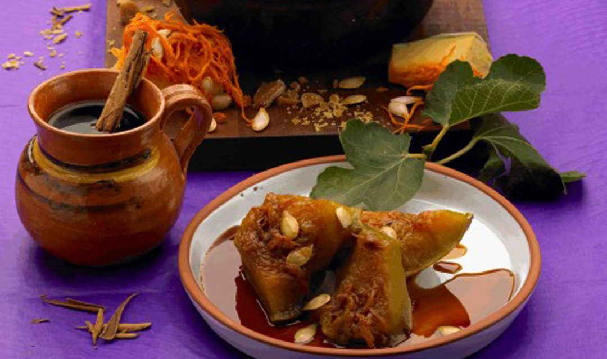

Calabaza

Calabaza sweetened with piloncillo and canela another traditional dish for the offers to passed away loved ones.
Ingridients
- 3 kilos de calabaza de Castilla cortada en triángulos grandes
- 5 clavos (especia aromática)
- 1 ramita de canela
Steps
- Pon el agua a calentar hasta hervir y agrega la canela.
- Deja hervir alrededor de un minuto y agrega el kilo de piloncillo.
- Una vez derretido éste, agrega los ingredientes restantes (calabaza, guayaba y caña).